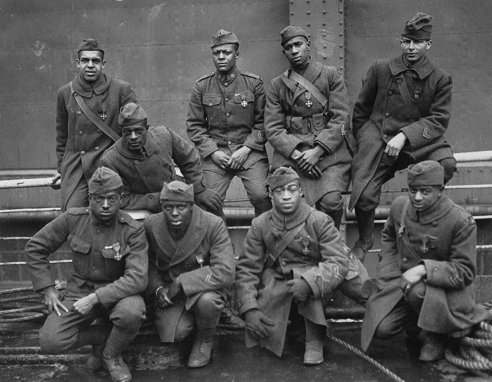

Directions: Study the photograph and the background note, then answer the questions.

Background. The 369th Infantry was a Black regiment, first raised as the 15th New York National Guard. In a segregated army, most Black soldiers were assigned to labor units. The 369th was instead handed to the French army, fought under French command with French weapons and helmets, and spent about 191 days in the front line, longer than any other American regiment. France awarded the Croix de Guerre to the whole regiment, and 171 of its men, including the nine in the photograph, received individual awards, according to the National Park Service.
Croix de Guerre: a French military decoration awarded for gallantry in action
segregated: separated by race by law or official practice
1. What details in the photograph show that these men were decorated soldiers, and what detail tells you the photograph was not taken in combat?
2. Why did the 369th fight under French command rather than as part of the American Expeditionary Forces in line? Connect your answer to how the segregated army used Black soldiers.
3. A student says this photograph proves the American army treated Black soldiers as equals. Use two facts from the background note or the lesson to explain why that claim goes further than the evidence allows.
1. [Blueprint 9: Americans in combat] The men wear the Croix de Guerre on their uniforms and pose in a group for the camera, in ranks, at ease, aboard a transport. Nothing in the frame shows trenches, weapons in use, or a battlefield. The caption date settles it: the photograph was taken on February 12, 1919, three months after the armistice, as the regiment came home. Students should cite the medals and the posed group, and may cite the caption date.
2. [Blueprint 8: Mobilization; Blueprint 9: Americans in combat] The American army was segregated and assigned most Black soldiers to labor units, unloading ships, building roads, and burying the dead, on the assumption that they were fit for labor rather than combat. The 369th reached the front because it was handed to the French army, which needed infantry, issued it French weapons and helmets, and used it as a combat regiment. Its about 191 days in line came under French command, not as part of Pershing's independent American army in the line.
3. [Blueprint 9: Americans in combat] Any two facts, used against the claim: the army was segregated; most Black soldiers were kept in labor units rather than combat divisions; the 369th fought under French, not American, command, with French equipment; France, not the United States, decorated the regiment; the photograph itself dates from 1919, after the war, so it shows honors at homecoming, not treatment during service. The photograph proves distinguished combat service. It does not prove equal treatment by the army that assigned most Black soldiers to labor.
Teacher note. This check is formative. The common weak answer on question 3 praises the regiment without engaging the claim. Push students to the structure of the evidence: one honored regiment, under foreign command, in a segregated army, is evidence about the regiment and about France. The claim under test is about the American army.